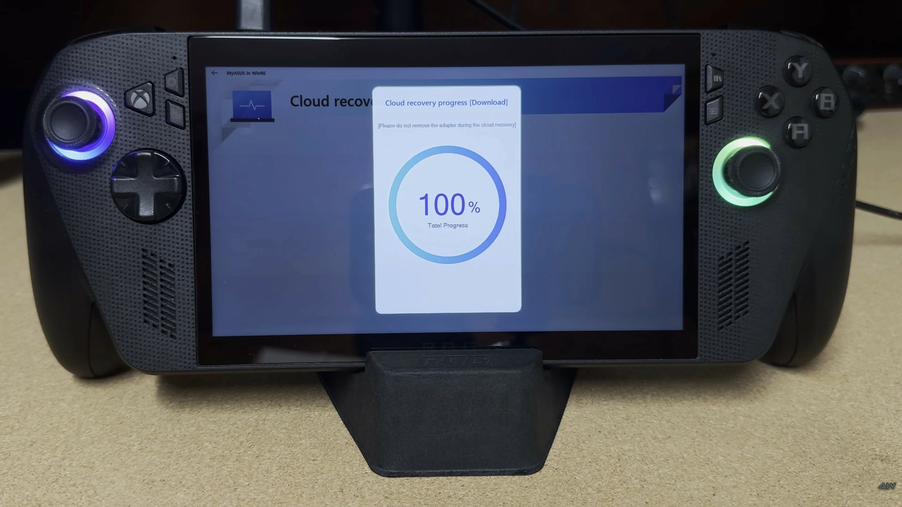
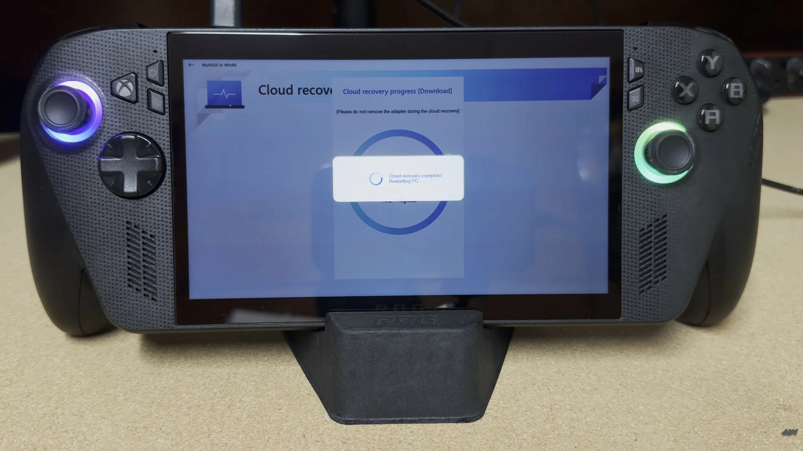

Contribution Guide
To bring EverAlly support to the rest of the models, we need Cloud Recovery file backups. It would be great if you could help us!
ROG Ally
Available
ROG Ally X
Contributors Required
ROG Xbox Ally
Contributors Required
ROG Xbox Ally X
Contributors Required
Before you begin, ensure you have the following hardware setup ready:
- USB Type-C Hub (to connect your USB drives and charger simultaneously)
- USB Flash Drive (minimum 4GB, dedicated for Rescuezilla bootable media)
- External Storage (USB Flash Drive, SSD, or HDD with at least 32GB free space) to store the recovery image backup
- Enter BIOS: Boot into the BIOS, navigate to Advanced Mode (Y) > Advanced tab, and select Cloud Recovery.
- Initialize Recovery: Connect to Wi-Fi and allow the system to download and boot into the Cloud Recovery environment.
- Download Factory Media: Reconnect to Wi-Fi to begin downloading the factory recovery installation files (approximately 17–19 GB).
- Prepare Rescuezilla: While the recovery files are downloading, use a separate computer to download Rescuezilla and create a bootable USB drive.


- Interrupt Reboot: Once the download completes, the system will auto-reboot. To prevent it from booting into the OS, hold the Volume Up button during the startup animation to access the Boot Menu. Select and boot from your Rescuezilla USB.
- Perform Backup: After booting into Rescuezilla follow the instructions in the video walkthrough below to create a full image backup of your internal SSD to your external storage or a local NAS.
Important Note
Do not allow the system to boot into the operating system after Step 5. If it boots, the file expansion process will begin, rendering the backup invalid. If this happens, you must restart the process from the beginning.
Compress to RAR or ZIP the whole Rescuezilla folder before uploading.